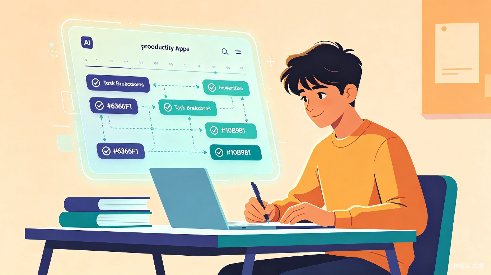

AI拖延症克星 —— 智能任务规划与时间管理平台，让每一个目标都有清晰的路径

TimeForge —— AI拖延症克星
大量大学生和职场新人面临拖延问题：明明清楚任务截止时间，却因缺乏合理的时间规划能力，往往在截止日期前才开始匆忙赶工。调查显示，超过 70% 的大学生承认存在不同程度的学业拖延行为，其中近 30% 的学生表示拖延已对其学业成绩造成显著负面影响。
开发 TimeForge 的灵感来源于团队在完成课程作业、实验报告和考试复习时反复遇到的时间管理困境。多数情况下，拖延的根源并非缺乏动力，而是面对复杂任务时不知道从何入手——缺乏清晰的执行路径和可操作的步骤分解。
TimeForge 是一款基于人工智能的任务规划与时间管理 Web 应用。用户只需输入学习或工作目标及截止日期，AI 即可自动将复杂任务拆解为可执行的子任务，生成科学合理的时间计划，并根据实际完成进度动态调整后续安排，帮助用户摆脱拖延困境，高效达成目标。
面对课程设计、实验报告、期末考试等多线任务，缺乏系统的时间管理方法，容易陷入"同时多项任务、不知从何开始"的困境。
备考周期长、内容多，需要科学的复习计划与进度追踪。传统方法难以根据实际掌握情况动态调整学习节奏。
初入职场面临多项目并行、汇报准备等任务，缺乏优先级判断和任务拆解经验，容易产生焦虑和低效加班。
有个人成长计划（如学习新技能、阅读计划、健身目标）但缺乏持续执行力和进度可视化工具。
面对"完成课程设计"这样的大目标，不知道如何分解为可执行的步骤。
静态计划无法应对突发情况，一次延误导致整个计划崩溃。
缺乏直观的进度反馈，难以感知自己的努力和成果，容易丧失动力。
拖延 → 焦虑 → 更拖延，形成难以打破的负面循环。
用户输入目标描述与截止日期，LLM 自动分析任务复杂度，拆解为层级化的子任务列表，每个子任务附带预估耗时和难度评级。
基于任务拆解结果，结合用户设定的可用时间段和学习偏好，自动生成每日执行计划，并智能避开用户已有的固定安排。
当用户完成或延迟某项任务时，AI 自动重新评估剩余任务的时间分配，实时调整后续计划，确保截止日期前完成目标。
通过甘特图、完成率仪表盘、连续打卡日历等可视化组件，直观展示学习进度和效率趋势，增强成就感与持续动力。
结合任务紧急度和用户习惯，在最佳时机推送提醒。完成阶段性目标后给予正向反馈和成就徽章，构建游戏化激励机制。
每周自动生成学习复盘报告，包含完成率、专注时长分布、效率趋势分析，帮助用户客观评估自己的时间管理状态。
| 功能维度 | TimeForge | 传统待办工具 | 日历应用 | Forest/Focus |
|---|---|---|---|---|
| AI 任务拆解 | ✅ 智能拆解 | ❌ 不支持 | ❌ 不支持 | ❌ 不支持 |
| 自动计划生成 | ✅ 动态规划 | ⚠ 手动排期 | ⚠ 手动创建 | ❌ 不支持 |
| 动态进度调整 | ✅ 实时重规划 | ❌ 不支持 | ❌ 不支持 | ❌ 不支持 |
| 进度可视化 | ✅ 多维度 | ⚠ 基础统计 | ❌ 不支持 | ⚠ 专注时长 |
| 游戏化激励 | ✅ 成就系统 | ❌ 不支持 | ❌ 不支持 | ✅ 种树机制 |
| 学习复盘报告 | ✅ AI 生成 | ❌ 不支持 | ❌ 不支持 | ⚠ 简单统计 |
TimeForge 采用前后端分离的现代 Web 架构，前端使用 React + TypeScript 构建响应式单页应用，后端基于 Node.js + Python 微服务架构，AI 能力通过大语言模型 API 实现。
基于 React 18 + TypeScript 构建，使用 Tailwind CSS 实现响应式设计。集成 ECharts 实现数据可视化，React Router 管理页面路由，Zustand 进行轻量级状态管理。
Node.js (Express) 负责用户认证、任务 CRUD、日程管理等 RESTful API。Python (FastAPI) 微服务负责 AI 任务拆解、计划生成和动态调整等计算密集型逻辑，通过 gRPC 与 Node.js 主服务通信。
接入 GPT-4 / Claude 等大语言模型 API 实现任务智能拆解与计划生成。使用 PostgreSQL 存储用户数据和任务信息，Redis 缓存热点数据与会话管理，向量数据库（Chroma）存储用户行为特征用于个性化推荐。
graph TB
subgraph 前端["前端层"]
A[React SPA]
end
subgraph 网关["网关层"]
B[Nginx 反向代理]
end
subgraph 后端["后端服务层"]
C[Node.js Express
主业务服务]
D[Python FastAPI
AI 任务引擎]
E[消息队列
RabbitMQ]
end
subgraph 数据["数据与 AI 层"]
F[PostgreSQL
业务数据库]
G[Redis
缓存服务]
H[Chroma
向量数据库]
I[LLM API
GPT-4 / Claude]
end
A -->|HTTPS| B
B --> C
C -->|gRPC| D
C --> E
D --> E
C --> F
C --> G
D --> I
D --> H
D --> F
TimeForge 的核心用户流程围绕"输入目标 → AI 拆解 → 执行追踪 → 动态调整 → 复盘总结"五个阶段展开，形成完整的任务管理闭环。
用户描述目标内容和截止日期，可选设置优先级和每日可用时间
AI 自动拆解任务层级，评估每项子任务的耗时和难度
用户审核 AI 生成的计划，可手动修改子任务或时间安排
按计划执行任务，完成打卡，AI 实时追踪进度
延误或提前完成时，AI 自动调整后续计划
目标完成后生成复盘报告，积累个人效率数据
flowchart TD
A[📝 用户输入目标] --> B{🧠 AI 分析任务}
B --> C[📋 生成任务拆解树]
C --> D[📅 生成每日计划]
D --> E{🔍 用户审核}
E -->|不满意| F[✏ 手动调整]
F --> B
E -->|满意| G[✅ 开始执行]
G --> H[📊 每日打卡追踪]
H --> I{⏳ 进度检查}
I -->|按时完成| J[🎉 获得成就奖励]
I -->|出现延误| K[🔄 AI 动态重规划]
K --> D
J --> L{所有任务完成?}
L -->|否| H
L -->|是| M[📊 生成复盘报告]
M --> N[💪 积累个人效率档案]
TimeForge 的核心价值在于将"知道要做"转化为"知道怎么做"。AI 不仅帮助用户制定合理计划，更能在执行过程中持续陪伴与调整，从根本上解决因"无从下手"导致的拖延问题。
拖延症不仅是个人效率问题，更是影响学生心理健康和学业表现的重要因素。TimeForge 通过 AI 技术降低时间管理的门槛，帮助更多学生和职场新人形成科学的学习与工作习惯，减少因拖延导致的学习压力、焦虑情绪和时间浪费，具有积极的社会意义。
项目面向全体用户免费开放基础功能，确保经济条件不同的学生都能平等享受 AI 辅助学习的机会，体现教育公平的价值理念。
完成基础任务拆解、计划生成、进度追踪功能。支持 Web 端访问，接入 GPT API 实现智能规划。邀请种子用户内测，收集反馈快速迭代。
基于用户行为数据训练个性化推荐模型，实现更精准的任务难度评估和时间预估。引入学习小组、好友监督等社交功能，增强用户粘性。推出移动端适配。
开放 API 接口，支持与学校教务系统、企业 OA 系统对接。建立任务模板市场，用户可分享和复用优质任务拆解模板。引入多模态输入（语音、图片OCR）降低使用门槛。
自研任务规划垂直模型，降低 API 调用成本。支持多端协同（Web + 移动端 + 浏览器插件 + 智能手表）。引入情感分析，根据用户情绪状态智能调整任务难度和激励策略。
基础功能永久免费，高级 AI 分析、无限任务模板、团队协作等高级功能通过订阅制收费。
与高校合作提供班级管理版本，支持教师布置任务、追踪全班进度，按学校/院系收费。
面向企业提供项目管理与员工培训场景的定制化解决方案，支持私有化部署。
从六个核心维度对比 TimeForge 与市场主流产品的能力差异：
TimeForge 不仅仅是一个任务管理工具，更是一个以 AI 为驱动的个人效率伙伴。它填补了当前市场上"智能规划"与"动态调整"之间的空白，从根源上解决拖延问题——让用户不再因"不知道从何开始"而止步不前。
本项目方案由 TRAE Work 辅助生成，作为竞赛报名附件提交。